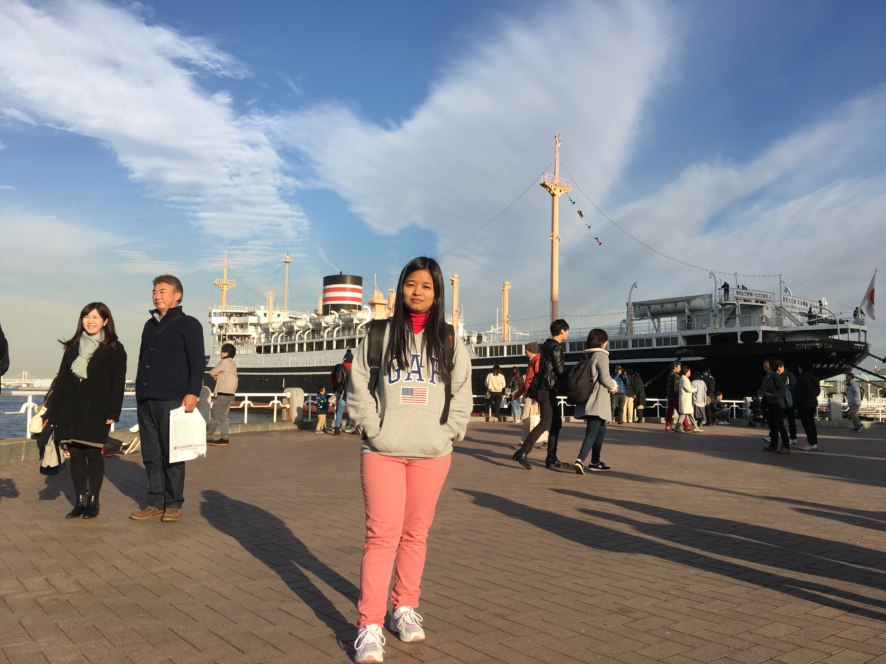

Hello and welcome! I'm a space propulsion engineer, musician, and amateur photographer. I’m currently a Propulsion Design Engineer at AGILE Space Industries working on the development of hypergolic in-space propulsion systems for lunar landers and spacecraft. My goal is to work directly on furthering the reach of robotic and human space exploration to allow humanity to inhabit planets beyond Earth and live in deep space. Thus far I have focused my engineering efforts in the following areas: orbital rocket launch engineering and production; propulsion development, design, and testing; cryogenics and high pressure fluid systems; satellite software and hardware; plasma physics and fusion technology; nitty-gritty hands on work. When I’m not forehead deep in work or projects, I spend my free time editing photos, writing/producing new music, and being a bookworm and podcast enthusiast.
